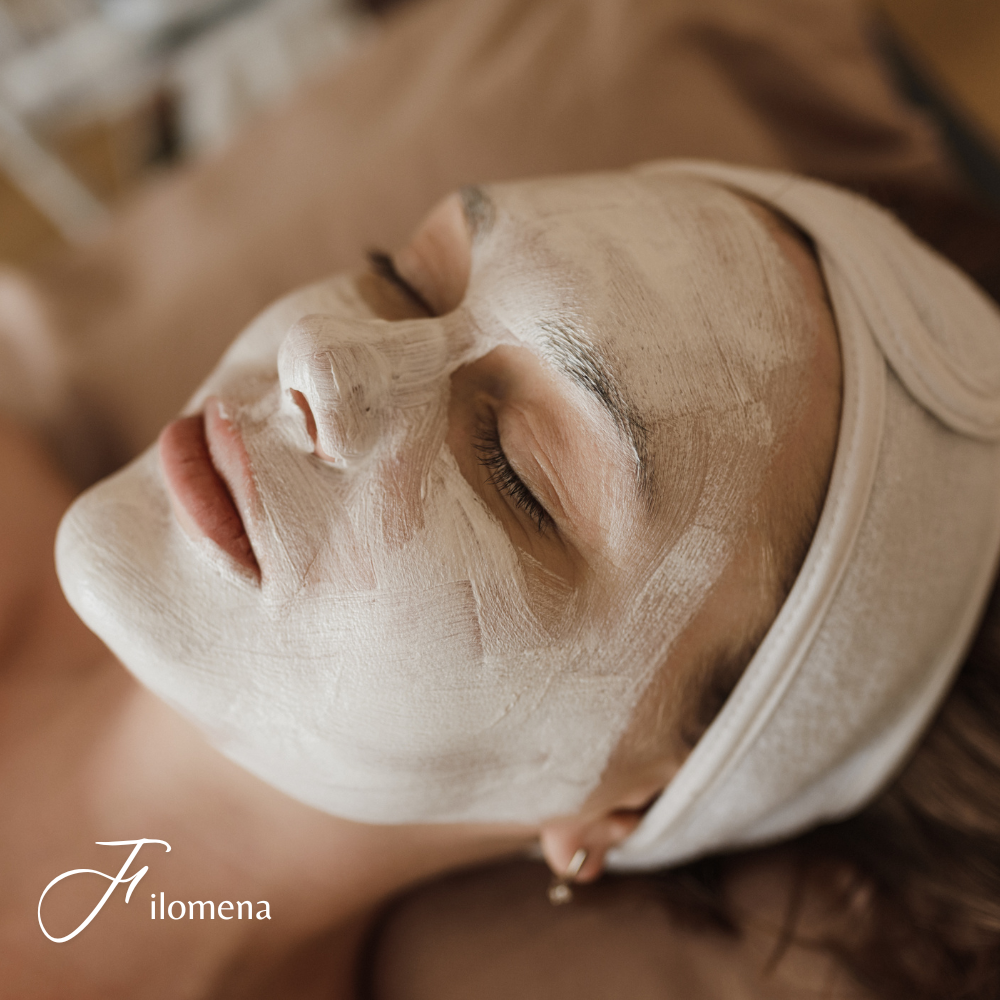
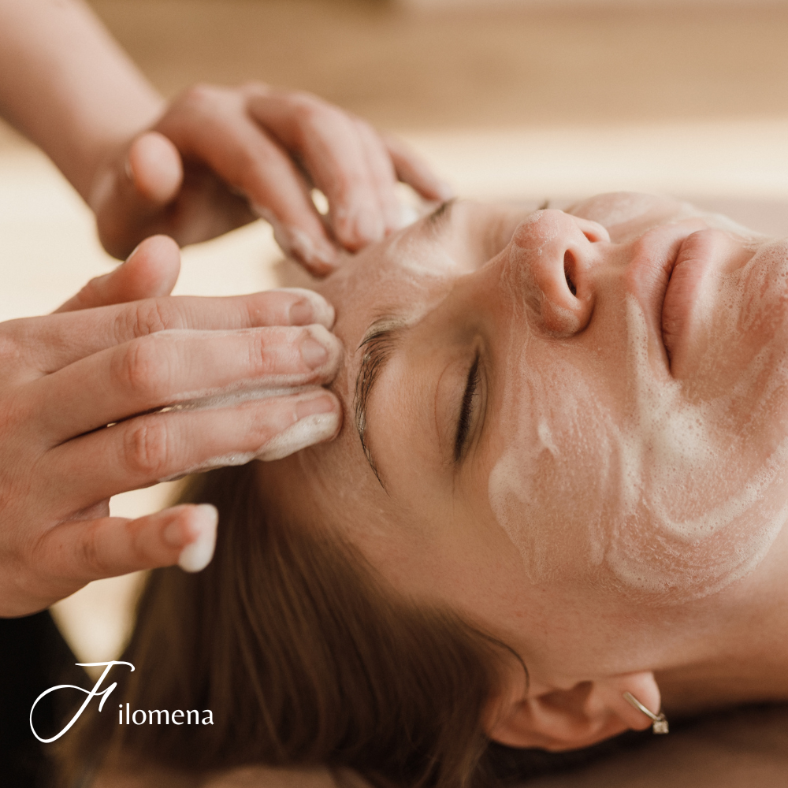
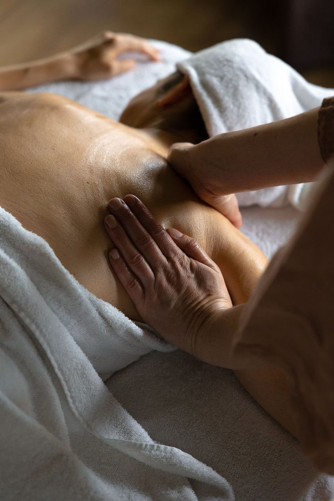
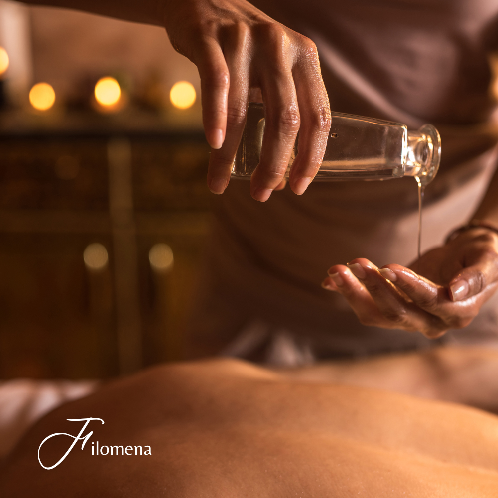
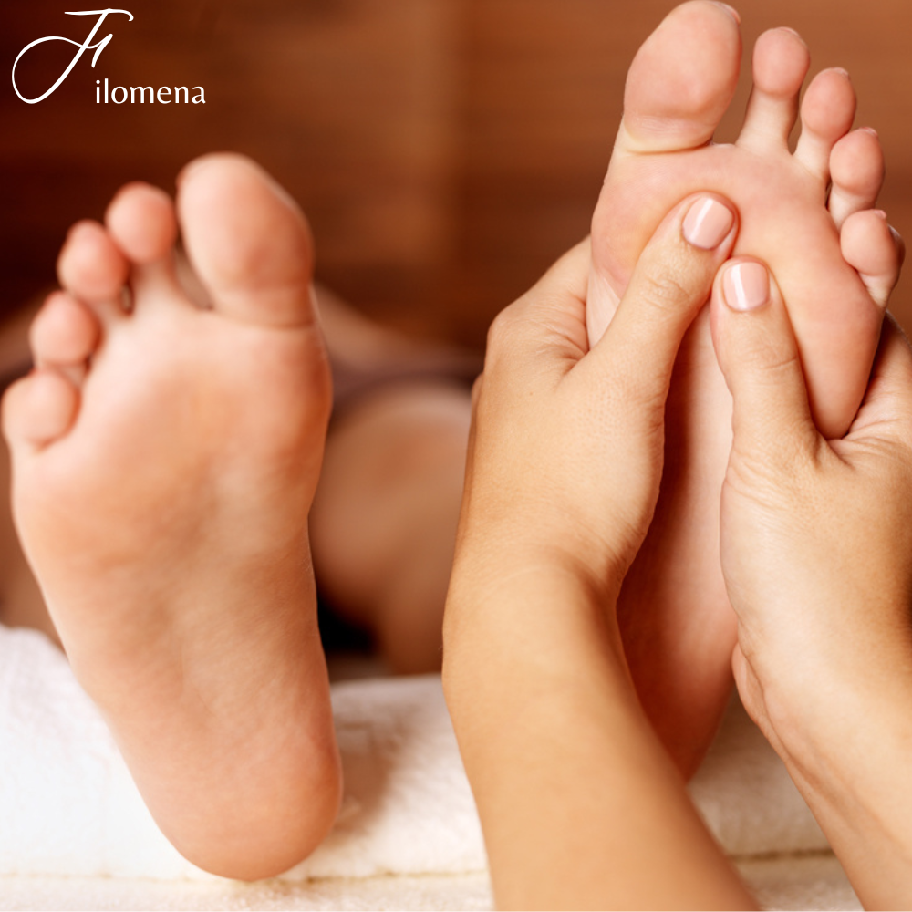

estetica filomena ❤

Las mascarillas faciales que contienen vitamina C están diseñadas para proporcionar varios beneficios
específicos para la piel. Aquí tienes una descripción detallada de los resultados que puedes esperar al usar
una mascarilla hidratante con vitamina C:
Beneficios de la Vitamina C en las Mascarillas Faciales
Hidratación Intensiva: La vitamina C puede ayudar a mejorar la hidratación de la piel al apoyar la
producción de colágeno y mantener la barrera de hidratación de la piel. Muchas mascarillas con vitamina C
combinan este ingrediente con otros agentes hidratantes, lo que ayuda a mantener la piel suave y bien
nutrida.
Reducción de Manchas y Pigmentación: La vitamina C es conocida por su capacidad para reducir la
hiperpigmentación y las manchas oscuras. Ayuda a inhibir la producción de melanina, que puede disminuir la
apariencia de manchas y tono desigual.
Iluminación de la Piel: La vitamina C puede dar un brillo saludable a la piel al reducir la opacidad y
mejorar el tono general. Esto resulta en una piel más radiante y luminosa.
Protección Antioxidante: La vitamina C es un potente antioxidante que protege la piel contra el daño causado
por los radicales libres, como la contaminación y los rayos UV. Esto ayuda a prevenir el envejecimiento
prematuro y el daño ambiental.
Estimulación del Colágeno: Ayuda a estimular la producción de colágeno, lo que puede mejorar la firmeza y
elasticidad de la piel, reduciendo la apariencia de líneas finas y arrugas.
Reducción de Inflamación: La vitamina C tiene propiedades antiinflamatorias que pueden ayudar a calmar la
piel irritada y reducir el enrojecimiento.

Una limpieza facial es un tratamiento que tiene como objetivo mejorar la apariencia de la piel del rostro
eliminando impurezas, células muertas, y puntos negros. Este procedimiento es adecuado para todo tipo de
piel y puede ayudar a mantener la piel sana, limpia y radiante.
Aquí te detallo los pasos generales de una limpieza facial:
Limpieza Inicial: Se comienza limpiando la piel para remover maquillaje, suciedad y grasa superficial. Se
utiliza un limpiador adecuado para el tipo de piel.
Exfoliación: Se aplica un exfoliante para eliminar las células muertas y dejar la piel más suave. Esto ayuda
a destapar los poros y permite una mejor absorción de los productos que se aplicarán después.
Vaporización: El uso de vapor ayuda a abrir los poros, facilitando la extracción de puntos negros y otras
impurezas.
Extracción: Este paso consiste en la eliminación manual de puntos negros y espinillas, siempre con técnicas
higiénicas para evitar infecciones o marcas.
Mascarilla: Se aplica una mascarilla facial adecuada para el tipo de piel (hidratante, purificante,
calmante, etc.) que ayuda a calmar la piel y a nutrirla.
Tonificación: Se utiliza un tónico para cerrar los poros y equilibrar el pH de la piel.
Hidratación: Finalmente, se aplica una crema hidratante y, si es de día, un protector solar para proteger la
piel

Los masajes deportivos son una técnica especializada de masaje que se centra en las necesidades de los
atletas y personas activas. Estos masajes ayudan a preparar el cuerpo para la actividad física, mantenerlo
en óptimas condiciones, prevenir lesiones, y acelerar la recuperación después de un esfuerzo físico.
Tipos de Masajes Deportivos:
Masaje Pre-evento: Realizado antes de la actividad deportiva para preparar los músculos, mejorar la
circulación y aumentar la flexibilidad.
Masaje Post-evento: Aplicado después de la actividad física para ayudar a reducir la fatiga muscular,
aliviar el dolor y promover una recuperación rápida.
Masaje de Mantenimiento: Se realiza regularmente para mantener los músculos en buen estado, prevenir
lesiones y mejorar la movilidad.
Masaje de Rehabilitación: Usado para tratar lesiones, reducir el dolor y la inflamación, y acelerar la
recuperación.
Beneficios del Masaje Deportivo:
Mejora la circulación sanguínea.
Reduce la tensión muscular.
Aumenta la flexibilidad y el rango de movimiento.
Alivia el dolor muscular.
Ayuda en la recuperación de lesiones.
Mejora el rendimiento deportivo.
El masaje deportivo se adapta a las necesidades individuales del atleta, y puede variar en intensidad y
técnicas dependiendo de la fase de entrenamiento o la lesión que se esté tratando.

Los masajes descontracturantes están diseñados para relajar los músculos tensos y aliviar el dolor asociado
con la rigidez muscular. Se utilizan principalmente para tratar áreas del cuerpo que han estado sometidas a
estrés, tensión o sobrecarga, como el cuello, los hombros, la espalda y las piernas.
Beneficios de los masajes descontracturantes:
1. Alivio del dolor: Ayudan a reducir el dolor muscular y la incomodidad, especialmente en áreas donde hay
contracturas.
2. Mejora de la circulación: Estimulan el flujo sanguíneo, lo que puede ayudar a llevar más oxígeno y
nutrientes a los músculos y tejidos.
3. Relajación: Promueven una sensación de relajación general, lo que puede ayudar a reducir el estrés y la
ansiedad.
4. Aumento de la flexibilidad: Al liberar la tensión en los músculos, pueden mejorar la movilidad y la
flexibilidad.
5. Prevención de lesiones: Al mantener los músculos relajados y en buen estado, pueden ayudar a prevenir
lesiones relacionadas con la tensión muscular.

Los beneficios de una pedicura van más allá de lo estético, ya que también contribuyen significativamente a
la salud y el bienestar general. Aquí te detallo algunos de los principales beneficios:
1. Mejora la Salud de las Uñas
Previene problemas como uñas encarnadas, infecciones fúngicas y grietas en las uñas.
Mantiene las uñas fuertes y saludables al recortarlas y limpiarlas adecuadamente.
2. Exfoliación y Suavidad de la Piel
Elimina las células muertas de la piel, reduciendo la formación de callos y durezas.
Deja la piel suave y lisa, evitando la sequedad y las grietas.
3. Hidratación
Los tratamientos de pedicura suelen incluir la aplicación de cremas y aceites hidratantes que nutren la
piel.
Mantiene la piel de los pies flexible y bien hidratada, lo que es esencial para prevenir problemas como los
talones agrietados.
4. Mejora la Circulación
Los masajes en los pies durante la pedicura estimulan la circulación sanguínea, lo que ayuda a reducir la
hinchazón y alivia la tensión muscular.
Mejora la oxigenación de los tejidos, lo que promueve una mejor salud en general.
5. Prevención de Infecciones
Al limpiar y desinfectar los pies y las uñas, la pedicura ayuda a prevenir infecciones bacterianas y
fúngicas.
Mantener los pies limpios y bien cuidados es clave para evitar problemas de salud.
6. Relajación y Reducción del Estrés
El proceso de pedicura, especialmente el masaje de pies, proporciona una sensación de relajación y
bienestar, ayudando a reducir el estrés y la tensión.
Puede mejorar el estado de ánimo y proporcionar un momento de autocuidado y desconexión.
7. Mejora la Apariencia de los Pies
Da un aspecto más limpio y estéticamente agradable a los pies, con uñas bien cuidadas y, si se desea,
esmaltadas.
Puede aumentar la confianza al mostrar los pies en público, especialmente durante los meses de verano.
8. Detección Temprana de Problemas
Los profesionales de la pedicura pueden identificar signos tempranos de problemas de salud en los pies, como
hongos, verrugas, o problemas de circulación, y recomendar la atención médica adecuada.
En resumen, la pedicura no solo embellece los pies, sino que también contribuye a la salud general del
cuerpo, la relajación y el bienestar.